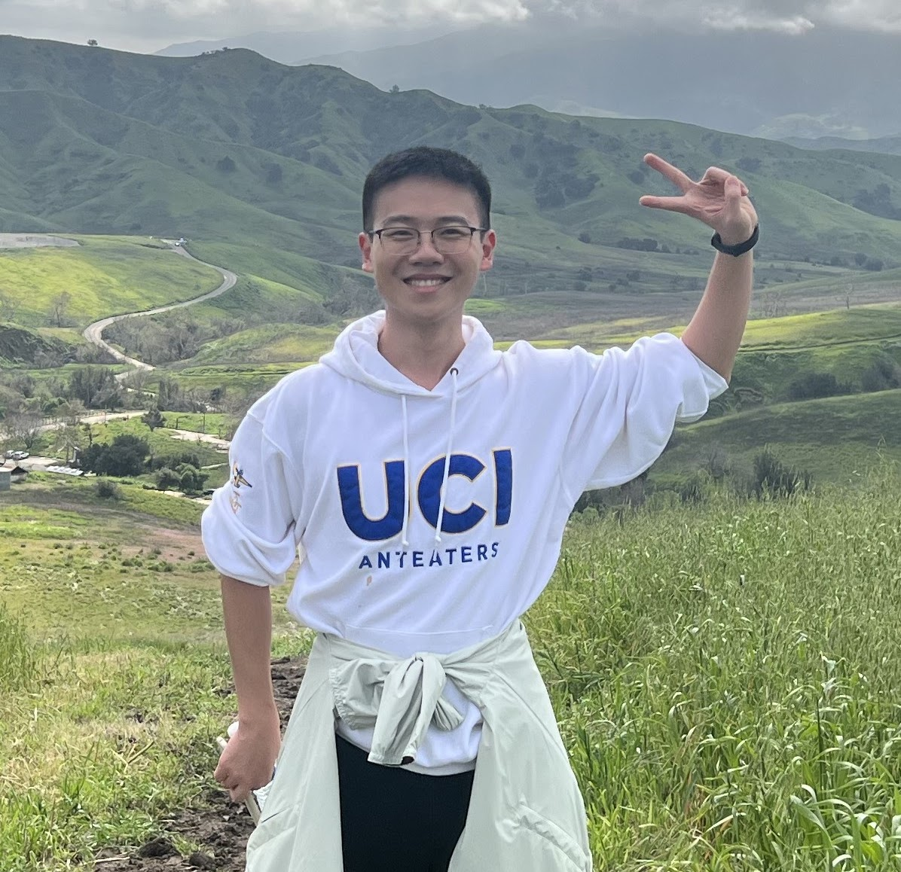

Yiyun He
Email: yih130 [ a t ] ucsd.edu Office: APM 6311 Google Scholar
I am a Stefan E. Warschawski Math Fellow in the Mathematics Department at the University of California, San Diego. From January to May 2026, I was an ICERM Postdoctoral Fellow at the Institute for Computational and Experimental Research in Mathematics at Brown University. I obtained my Ph.D. degree from the Mathematics Department at the University of California, Irvine, under the supervision of my advisor, Professor Roman Vershynin. I obtained my bachelor's degree in Mathematics and Applied Mathematics from the University of Science and Technology of China in 2020. My personal CV is here.
My research is mainly in probability theory, including data science, differential privacy, random matrices, combinatorics, randomized numerical linear algebra, etc.

Publications
Published and Accepted Papers
Preprints and Manuscripts
Invited and Contributed Talks
Travels and Conferences
Teaching Experience
- MATH 11: Introductory Probability & Statistics, lower division, UCSD Fall 2026
- MATH 10A: Calculus I, lower division, UCSD Fall 2025
TA
- MATH 3A: Calculus I, lower division, Teaching Assistant, UCI Summer 2024
- MATH 130B: Probability II, upper division, Teaching Assistant, UCI Spring 2024
- MATH 121A: Linear Algebra I, upper division, Teaching Assistant, UCI Fall 2021
- MATH 121A: Linear Algebra I, upper division, Reader, UCI Summer 2021
- MATH 140A: Elementary Analysis I, upper division, Reader, UCI Spring 2021
- Combinatorics, Teaching Assistant, USTC Fall 2019
Directed Reading Program
- Differential Privacy in Machine Learning, UCI Spring 2024
- Pattern Recognition and Bayesian Analysis, UCI Winter 2025
- Random Matrix Theory, UCI Spring 2025